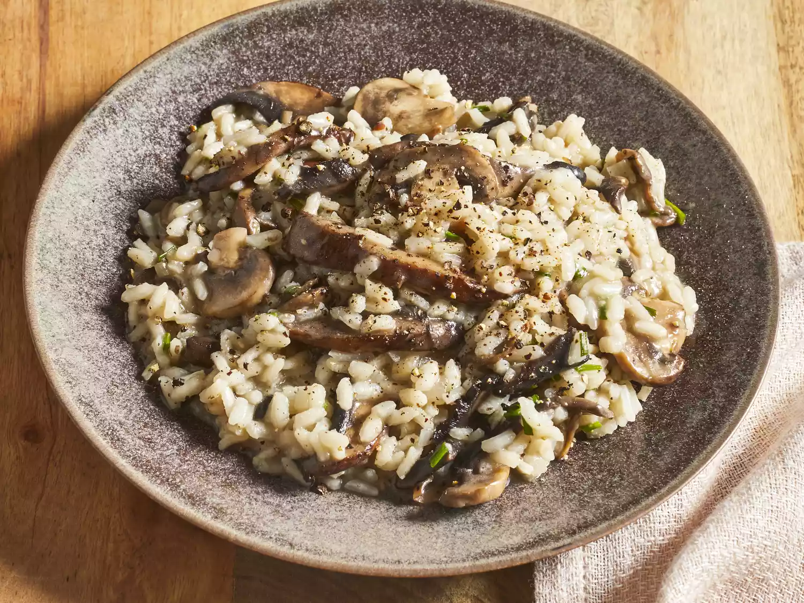

Gourmet Mushroom Risotto

Description
This mushroom risotto is cooked the slow and painful way, but-oh
so worth it. Complements grilled meats and chicken dishes very well.
Check the rice by biting into it. It should be slightly al dente
(or resist slightly to the tooth but not be hard in the center).
Risotto ranks right up there as one of the greatest dishes you can
make with rice. Originating in Italy, risotto is a recipe made by
simmering a starchy variety of rice in broth, with flavor-boosting
ingredients added like onions, garlic, vegetables, meats, spices,
herbs, and cheese. This 5-star recipe for mushroom risotto has
thousands of ratings and reviews, and is a top-rated favorite for
our Allrecipes community of home cooks.
Ingredients
- 6 cups chicken broth, or as needed
- 3 tablespoons olive oil, divided
- 1 pound portobello mushrooms, thinly sliced
- 1 pound white mushrooms, thinly sliced
- 2 medium shallots, diced
- 1 ½ cups Arborio rice
- ½ cup dry white wine
- 4 tablespoons butter
- 3 tablespoons finely chopped chives
- ⅓ cup freshly grated Parmesan cheese
- sea salt and freshly ground black pepper to taste
Steps
- Hot broth: Keep the broth hot the whole way through. Measure out a little more into the broth pot than the recipe says to make up for evaporation as it sits.
- Toast the rice: An essential step to making risotto is to toast the grains in hot oil until they start to turn translucent around the edges. This could take a couple of minutes. Stir continuously during this process.
- Stir, stir, stir: Yes, you stir risotto as it simmers. That's what helps release the starch from the grains of rice to make that creamy texture you want. Do you have to stir constantly? No. Stir after each half cup of broth you add to make sure the broth is distributed evenly, then stir again every 30 seconds or so until almost all the broth is absorbed. Add another half cup of broth and repeat. Listen to music. Sip some wine. Good risotto is worth the time it takes.
- Low and slow: Keep the broth hot and the risotto at a low simmer throughout.
- The perfect texture: Risotto is done when the rice is al dente: firm but not crunchy when you bite into it. It should not be as dry as steamed rice, but should have enough liquid to make it loose. Add just a touch more broth if needed before stirring in the butter and Parmesan cheese.
- Serve immediately: Risotto waits for no one. It will continue to cook as it sits even when it's off the heat, so be prepared to dish it up right away.